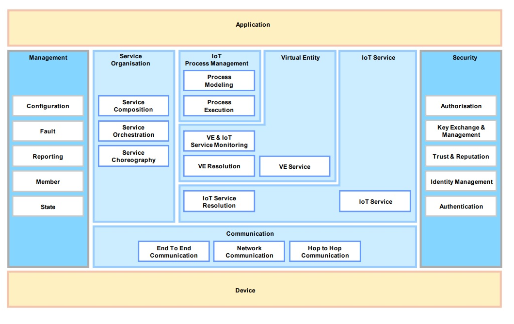

Q1: Describe IOT Architectural view in detail.
Ans : IOT Architectural view
Views are used during the design and implementation phase of concrete system architecture. A view is composed of viewpoints, which aggregate several architectural concepts in order to make the work with views easier.
The IoT Reference Architecture is use-case- and application independent and is therefore not compatible to the concept of views and viewpoints one-by-one.
Functional View Specification

Functional View describes the system's runtime Functional Components, their responsibilities, default functions, interfaces and primary interactions. The Functional View derives from the Functional Model and reflects the developer's perspectives on the system.
• It will need to be extended with all identified and recommended) new profile-specific Functional Components including their interfaces and a list of Sequence Charts illustrating recommended usage of those components.
• The viewpoints used for constructing the IoT Functional View are hence :
1) The Unified Requirements;
2) The IoT Functional Model
Once all Functional Components are defined, the default function set,system use cases, sequence charts and interface definitions are made.
Device and Application functional group : Device functional components contains the sensing, actuation tag, processing and storage components. Application functional group contains standalone application.
• Communication functional group : It contains the components for end-to-end communication, network communication, and Hop-by-Hop communication.
Communication type
End-to-End Communication FC
1) Responsible for end-to-end transport of application layer messages through diverse network and MAC/physical layers
2) Used with mesh radio networking technologies such as IEEE 802.15.4
3) The End-to-End FC interfaces the Network FC on the "southbound" direction.
Hop-by-hop FC
1) Responsible for transmission and reception of physical and MAC layer frames to/from other devices.
2) Two interfaces used : one "southbound" to/from the actual radio on the device, and another for "northbound" to/from the Network FC in the Communication FG.
Network FC
1) Responsible for message routing and forwarding and the necessary translations of various identifiers and addresses.
2) Network FC interfaces the End-to-End Communication FC on the "northbound" direction and the Hop-by-Hop Communication FC on the "southbound” direction.
• IoT Service functional group : It consists of IoT Service FC and the IoT Service Resolution FC. Various service implementations are covered in service FC and service resolution FC contains the necessary functions to realize a directory of IoT Services that allows dynamic management of IoT service descriptions.
• Virtual Entity functional group : The Virtual Entity FG contains functions that support the interactions between Users and Physical Thing Provides the functional concepts necessary to conceptually integrate the IoT world into traditional (business) processes.
• The Process Modeling FC which provides the tools required for modeling IoT-aware business processes that will be serialized and executed in the Process Execution FC, which is responsible for deploying process models to the execution environments.
• Service Organization FG : Acts as a communication hub between several other Functional Groups by composing and orchestrating Services of different levels of abstraction.
• The Service Orchestration FC resolves the IoT Services that are suitable to fulfill service requests coming from the Process Execution FC or from Users while the Service Composition FC is responsible for creating services with extended functionality by composing IoT services with other services. Service Choreography FC offers a broker that handles Publish/Subscribe communication between services.
• Virtual Entity FG : Provides functionality for the interaction of VES with the IoT system, for VE look-up and discovery and for providing information concerning VEs. The VE Resolution FC provides discovery services for associations between Ves and IoT. .
• VE and IoT Service Monitoring FC is responsible for automatically finding new associations based on service descriptions and information about VE's. the VE Service FC handles entity services.
• Service FG : Provides IoT services as well as functionalities for discovery, look-up, and name resolution of lot Services. • Security FG : It is responsible for security and privacy matters in
IoT-A-compliant IoT systems.
1) The Authorization FC is used to apply access control and access policy management while, the Authentication FC is used for user and service authentication.
2) Key Exchange and Management (KEM) FC enables secure communications ensuring integrity and confidentiality by distributing keys upon request in a secure way.
• Management FG : It is responsible for the composition and tracking of actions that involve the other FGs.
1) Configuration FC is responsible for initializing the system's configuration.
2) The Fault FC is used to identify, isolate, correct and log faults that occur in the IoT system.
3) The Member FC is responsible for the management of the membership of any relevant entity
• The Reporting FC generates reports about the system and, finally, the State FC can change or enforce a particular state on the system by issuing a sequence of commands to the other FCs.